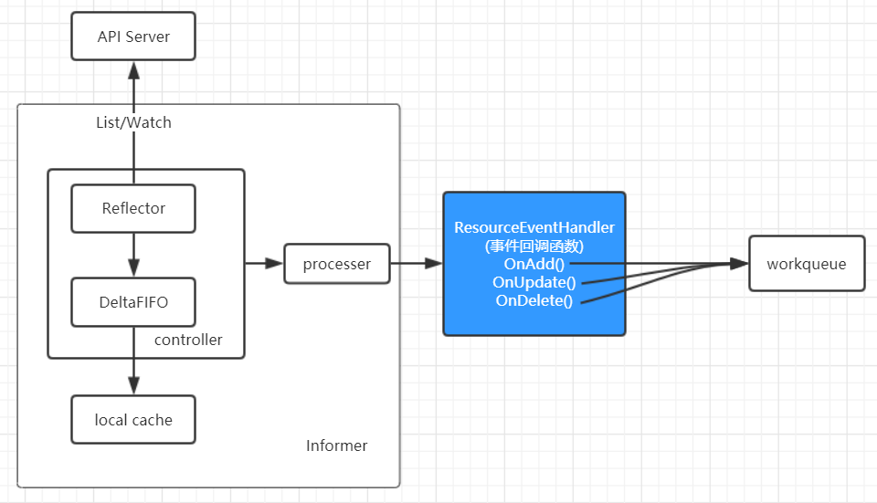
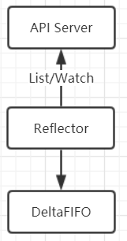
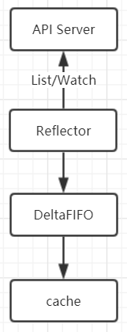

Informer机制
1. 概述
讲 Informer 还是比较有压力的，client-go 中的逻辑确实有点复杂，我甚至怀疑有“炫技”的成分。Informer 在很多组件的源码中可以看到，尤其是 kube-controller-manager (写这篇文章时我已经基本写完 kube-scheduler 的源码分析，准备着手写 kube-controller-manager 了，鉴于 controlelr 和 client-go 关联太大，跳过来先讲讲 Informer).
Informer 是 client-go 中一个比较核心的工具，通过 Informer 我们可以轻松 List/Get 某个资源对象，可以监听资源对象的各种事件(比如创建和删除)然后触发回调函数，让我们能够在各种事件发生的时候能够作出相应的逻辑处理。举个例字，当 pod 数量变化的时候 deployment 是不是需要判断自己名下的 pod 数量是否还和预期的一样？如果少了是不是要考虑创建？
2. 架构概览

如上图，Informer 可以 watch API Server，监听各种事件，然后回调事件 handler。这些事件 handler 可以做一些简单的过滤，最终要将 item 放到 workequeue 中，这个 workerqueue 也是 client-go 提供的工具。最终用户写的 controller 负责启动 worker 去消费这 workqueue 中的 item.
3. SharedInformerFactory
SharedInformerFactory 提供所有 API group 资源的 shared informers，也就是说通过这个 factory 可以使用 DeploymentInformer、ConfigMapInformer 等等各种 Informer，从而能够实现针对各种资源的逻辑处理。
informers/factory.go:185
type SharedInformerFactory interface {
internalinterfaces.SharedInformerFactory
ForResource(resource schema.GroupVersionResource) (GenericInformer, error)
WaitForCacheSync(stopCh <-chan struct{}) map[reflect.Type]bool
Admissionregistration() admissionregistration.Interface
Apps() apps.Interface
Auditregistration() auditregistration.Interface
Autoscaling() autoscaling.Interface
Batch() batch.Interface
Certificates() certificates.Interface
Coordination() coordination.Interface
Core() core.Interface
// ……
}
这个 interface 我们关注3个点：
internalinterfaces.SharedInformerFactory接口ForResource()方法- 其他方法的类型
3.1. 同质的方法
我们先看第三点，找个特例，从这个接口的一个方法往里面看一下类型含义，比如Apps() apps.Interface吧：
informers/apps/interface.go:29
type Interface interface {
// V1 provides access to shared informers for resources in V1.
V1() v1.Interface
// V1beta1 provides access to shared informers for resources in V1beta1.
V1beta1() v1beta1.Interface
// V1beta2 provides access to shared informers for resources in V1beta2.
V1beta2() v1beta2.Interface
}
很自然我们想到要继续看v1.Interface：
informers/apps/v1/interface.go:26
type Interface interface {
// ControllerRevisions returns a ControllerRevisionInformer.
ControllerRevisions() ControllerRevisionInformer
// DaemonSets returns a DaemonSetInformer.
DaemonSets() DaemonSetInformer
// Deployments returns a DeploymentInformer.
Deployments() DeploymentInformer
// ReplicaSets returns a ReplicaSetInformer.
ReplicaSets() ReplicaSetInformer
// StatefulSets returns a StatefulSetInformer.
StatefulSets() StatefulSetInformer
}
DeploymentInformer 又是什么类型呢？
informers/apps/v1/deployment.go:36
type DeploymentInformer interface {
Informer() cache.SharedIndexInformer
Lister() v1.DeploymentLister
}
可以看到这个 interface 的两个方法的特点，这个接口要提供的是针对 Deployments 的 shared informer 和 lister. 我们先不纠结细节，到这里我们先理解SharedInformerFactory 提供所有 API group 资源的 shared informers这句话。
3.2. ForResource()方法
这个方法返回指定类型的 shared informer 的通用访问方式，从实现中可以看到一些端倪：
informers/generic.go:80
func (f *sharedInformerFactory) ForResource(resource schema.GroupVersionResource) (GenericInformer, error) {
switch resource {
// Group=admissionregistration.k8s.io, Version=v1alpha1
case v1alpha1.SchemeGroupVersion.WithResource("initializerconfigurations"):
return &genericInformer{resource: resource.GroupResource(), informer: f.Admissionregistration().V1alpha1().InitializerConfigurations().Informer()}, nil
// ……
}
这里的返回值是 GenericInformer 类型，很简洁：
informers/generic.go:58
type GenericInformer interface {
Informer() cache.SharedIndexInformer
Lister() cache.GenericLister
}
3.3. internalinterfaces.SharedInformerFactory
informers/internalinterfaces/factory_interfaces.go:34
type SharedInformerFactory interface {
Start(stopCh <-chan struct{})
InformerFor(obj runtime.Object, newFunc NewInformerFunc) cache.SharedIndexInformer
}
这里的 InformerFor() 方法和前面的 ForResource() 有点像，这里的返回值是 SharedIndexInformer，GenericInformer 的 Informer() 方法返回值也是 SharedIndexInformer：
tools/cache/shared_informer.go:66
type SharedIndexInformer interface {
SharedInformer
// AddIndexers add indexers to the informer before it starts.
AddIndexers(indexers Indexers) error
GetIndexer() Indexer
}
3.4. sharedInformerFactory
sharedInformerFactory 对象是 SharedInformerFactory 接口的具体实现，从这个 struct 的属性中我们可以看到一些有用的信息：
informers/factory.go:53
type sharedInformerFactory struct {
client kubernetes.Interface
namespace string
tweakListOptions internalinterfaces.TweakListOptionsFunc
lock sync.Mutex
defaultResync time.Duration
customResync map[reflect.Type]time.Duration
informers map[reflect.Type]cache.SharedIndexInformer
startedInformers map[reflect.Type]bool
}
这里主要注意 client 和 informers，client 先不细说，大家从字面理解，当作一个可以和 api server 交互(CURD)的工具先就行。informers map[reflect.Type]cache.SharedIndexInformer明显是存放了多个不同类型的 informers，这个 map 的 key 表达一种 obj 的类型，value 是 SharedIndexInformer，后面我们会讲。
4. SharedIndexInformer
看 client-go 的过程中我一直在想到底哪个对象最能代表 Informer，后来觉得 SharedIndexInformer 应该可以被认为就是广义的 Informer 了。
我们在前面看到 GenericInformer 的代码，再附加对应 struct 贴一份：
type GenericInformer interface {
Informer() cache.SharedIndexInformer
Lister() cache.GenericLister
}
type genericInformer struct {
informer cache.SharedIndexInformer
resource schema.GroupResource
}
我们编码的时候直接使用的都是 SharedInformerFactory，往里面跟可以认为 GenericInformer 是第一层，这个接口的方法很清晰表达了意图。这里涉及到 informer+lister，我们一一来看。
SharedIndexInformer 的定义如下：
tools/cache/shared_informer.go:66
type SharedIndexInformer interface {
SharedInformer
AddIndexers(indexers Indexers) error
GetIndexer() Indexer
}
这里包了一个 Interface：
tools/cache/shared_informer.go:43
type SharedInformer interface {
// 留意这个方法
AddEventHandler(handler ResourceEventHandler)
AddEventHandlerWithResyncPeriod(handler ResourceEventHandler, resyncPeriod time.Duration)
GetStore() Store
GetController() Controller
Run(stopCh <-chan struct{})
HasSynced() bool
LastSyncResourceVersion() string
}
从函数名得不到太多直观的信息，我们从 SharedIndexInformer 的实现 sharedIndexInformer 入手：
tools/cache/shared_informer.go:127
type sharedIndexInformer struct {
indexer Indexer
controller Controller
processor *sharedProcessor
cacheMutationDetector CacheMutationDetector
listerWatcher ListerWatcher
objectType runtime.Object
resyncCheckPeriod time.Duration
defaultEventHandlerResyncPeriod time.Duration
clock clock.Clock
started, stopped bool
startedLock sync.Mutex
blockDeltas sync.Mutex
}
从 sharedIndexInformer 的属性中可以看到几个实实在在的对象：
- indexer
- controller
- processor
- listerWatcher
4.1. indexer
Indexer 接口提供了各种 index 函数，让我们在 list 一个对象时可以使用这些索引函数：
tools/cache/index.go:27
type Indexer interface {
Store
Index(indexName string, obj interface{}) ([]interface{}, error)
IndexKeys(indexName, indexKey string) ([]string, error)
ListIndexFuncValues(indexName string) []string
ByIndex(indexName, indexKey string) ([]interface{}, error)
GetIndexers() Indexers
AddIndexers(newIndexers Indexers) error
}
这个接口的实现是 cache：
tools/cache/store.go:112
type cache struct {
cacheStorage ThreadSafeStore
keyFunc KeyFunc
}
另外我们注意到包了一个接口 Store：
type Store interface {
Add(obj interface{}) error
Update(obj interface{}) error
Delete(obj interface{}) error
List() []interface{}
ListKeys() []string
Get(obj interface{}) (item interface{}, exists bool, err error)
GetByKey(key string) (item interface{}, exists bool, err error)
Replace([]interface{}, string) error
Resync() error
}
Store 是一个一般对象的存储接口，Reflector(后面介绍)知道怎样 watch server 然后更新 store. Reflector 能够将 store 当作一个本地缓存系统，进而以类似队列的方式工作(队列中存的是等待被处理的对象)。
我们来看 Store 接口的一个实现：
type DeltaFIFO struct {
items map[string]Deltas
queue []string
//……
}
4.2. reflector
前面说到 Store 要给 Reflector 服务，我们看一下 Reflector 的定义：
tools/cache/reflector.go:47
type Reflector struct {
name string
metrics *reflectorMetrics
expectedType reflect.Type
// The destination to sync up with the watch source
store Store
// listerWatcher is used to perform lists and watches.
listerWatcher ListerWatcher
// ……
}
Reflector 要做的事情是 watch 一个指定的资源，然后将这个资源的变化反射到给定的store中。很明显这里的两个属性 listerWatcher 和 store 就是这些逻辑的关键。
我们简单看一下往 store 中添加数据的代码：
tools/cache/reflector.go:324
switch event.Type {
case watch.Added:
err := r.store.Add(event.Object)
// ……
case watch.Modified:
err := r.store.Update(event.Object)
// ……
case watch.Deleted:
// ……
err := r.store.Delete(event.Object)
这个 store 一般用的是 DeltaFIFO，到这里大概就知道 Refactor 从 API Server watch 资源，然后写入 DeltaFIFO 的过程了，大概长这个样子：

然后我们关注一下 DeltaFIFO 的 knownObjects 属性，在创建一个 DeltaFIFO 实例的时候有这样的逻辑：
tools/cache/delta_fifo.go:59
func NewDeltaFIFO(keyFunc KeyFunc, knownObjects KeyListerGetter) *DeltaFIFO {
f := &DeltaFIFO{
items: map[string]Deltas{},
queue: []string{},
keyFunc: keyFunc,
knownObjects: knownObjects,
}
f.cond.L = &f.lock
return f
}
这里接收了 KeyListerGetter 类型的 knownObjects，继续往前跟可以看到我们前面提到的 SharedIndexInformer 的初始化逻辑中将 indexer 对象当作了这里的 knownObjects 的实参：
tools/cache/shared_informer.go:192
fifo := NewDeltaFIFO(MetaNamespaceKeyFunc, s.indexer)
s.indexer 来自于：NewSharedIndexInformer() 函数的逻辑：
func NewSharedIndexInformer(lw ListerWatcher, objType runtime.Object, defaultEventHandlerResyncPeriod time.Duration, indexers Indexers) SharedIndexInformer {
realClock := &clock.RealClock{}
sharedIndexInformer := &sharedIndexInformer{
processor: &sharedProcessor{clock: realClock},
indexer: NewIndexer(DeletionHandlingMetaNamespaceKeyFunc, indexers),
listerWatcher: lw,
objectType: objType,
resyncCheckPeriod: defaultEventHandlerResyncPeriod,
defaultEventHandlerResyncPeriod: defaultEventHandlerResyncPeriod,
cacheMutationDetector: NewCacheMutationDetector(fmt.Sprintf("%T", objType)),
clock: realClock,
}
return sharedIndexInformer
}
这里的 NewIndexer() 函数中就可以看到我们前面提到的 Indexer 接口的实现 cache 对象了：
!FILENMAE tools/cache/store.go:239
func NewIndexer(keyFunc KeyFunc, indexers Indexers) Indexer {
return &cache{
cacheStorage: NewThreadSafeStore(indexers, Indices{}),
keyFunc: keyFunc,
}
}
Ok，我们可以基于前面的图加一个框框了：

4.3. ResourceEventHandler
在 SharedInformer 接口中有一个方法AddEventHandler(handler ResourceEventHandler)，我们看一下这个方法的一些细节。先来看 ResourceEventHandler 接口的定义：
tools/cache/controller.go:177
type ResourceEventHandler interface {
OnAdd(obj interface{})
OnUpdate(oldObj, newObj interface{})
OnDelete(obj interface{})
}
// adaptor
type ResourceEventHandlerFuncs struct {
AddFunc func(obj interface{})
UpdateFunc func(oldObj, newObj interface{})
DeleteFunc func(obj interface{})
}
ResourceEventHandler 要做的事情是 handle 一个资源对象的事件通知，在这个资源对象发生增加、修改、删除的时候分别对应上面3个方法的逻辑。下面在 processor 部分我们继续看 ResourceEventHandler.
4.4. controller
controller 对应这里的 Controller 接口：
tools/cache/controller.go:82
type Controller interface {
Run(stopCh <-chan struct{})
HasSynced() bool
LastSyncResourceVersion() string
}
这里有个Run()方法比较显眼，我们看一下 sharedIndexInformer 对 Run() 方法的实现：
tools/cache/shared_informer.go:189
func (s *sharedIndexInformer) Run(stopCh <-chan struct{}) {
// ……
cfg := &Config{
Queue: fifo,
ListerWatcher: s.listerWatcher,
ObjectType: s.objectType,
FullResyncPeriod: s.resyncCheckPeriod,
RetryOnError: false,
ShouldResync: s.processor.shouldResync,
Process: s.HandleDeltas,
}
func() {
// ……
s.controller = New(cfg)
// ……
}()
// ……
s.controller.Run(stopCh)
}
关注这里基于 Config 创建了一个 Controller 赋值给 s.controller，然后调用了这个 s.controller.Run() 方法。我们看一下 New 里面是什么：
tools/cache/controller.go:89
// New makes a new Controller from the given Config.
func New(c *Config) Controller {
ctlr := &controller{
config: *c,
clock: &clock.RealClock{},
}
return ctlr
}
这里的 controller 类型是：
tools/cache/controller.go:75
type controller struct {
config Config
reflector *Reflector
reflectorMutex sync.RWMutex
clock clock.Clock
}
4.4.1. controller.Run()
我们接着关注这个 controller 是怎么实现 Run() 方法的：
tools/cache/controller.go:100
func (c *controller) Run(stopCh <-chan struct{}) {
defer utilruntime.HandleCrash()
go func() {
<-stopCh
c.config.Queue.Close()
}()
// listerWatcher 和 queue 等都用于创建这里的r eflector 了
r := NewReflector(
c.config.ListerWatcher,
c.config.ObjectType,
c.config.Queue,
c.config.FullResyncPeriod,
)
r.ShouldResync = c.config.ShouldResync
r.clock = c.clock
c.reflectorMutex.Lock()
// reflector 是 controller 的一个关键属性
c.reflector = r
c.reflectorMutex.Unlock()
var wg wait.Group
defer wg.Wait()
wg.StartWithChannel(stopCh, r.Run)
// 逻辑到了 processLoop 里面
wait.Until(c.processLoop, time.Second, stopCh)
}
这个 loop 是用来消费 queue 的：
tools/cache/controller.go:148
func (c *controller) processLoop() {
for {
// 这里的 Pop() 明显是阻塞式的
// type PopProcessFunc func(interface{}) error
// PopProcessFunc 用于处理 queue 中 pop 出来的 element
obj, err := c.config.Queue.Pop(PopProcessFunc(c.config.Process))
if err != nil {
if err == FIFOClosedError {
return
}
if c.config.RetryOnError {
// This is the safe way to re-enqueue.
c.config.Queue.AddIfNotPresent(obj)
}
}
}
}
这里的 PopProcessFunc 可能会让人一时摸不着头脑，其实这这值是一个函数类型func(interface{}) error，这里PopProcessFunc(c.config.Process)也就是把c.config.Process转为了PopProcessFunc类型而已。
我们在前面有贴 sharedIndexInformer.Run() 这个函数，里面的Process: s.HandleDeltas,这一行其实就交代了这里的 PopProcessFunc 类型实例来源。
4.4.2. sharedIndexInformer.HandleDeltas()
tools/cache/shared_informer.go:344
func (s *sharedIndexInformer) HandleDeltas(obj interface{}) error {
s.blockDeltas.Lock()
defer s.blockDeltas.Unlock()
// from oldest to newest
// 循环处理这个对象的一系列状态
for _, d := range obj.(Deltas) {
switch d.Type {
case Sync, Added, Updated:
isSync := d.Type == Sync
s.cacheMutationDetector.AddObject(d.Object)
if old, exists, err := s.indexer.Get(d.Object); err == nil && exists {
if err := s.indexer.Update(d.Object); err != nil {
return err
}
// distribute
s.processor.distribute(updateNotification{oldObj: old, newObj: d.Object}, isSync)
} else {
if err := s.indexer.Add(d.Object); err != nil {
return err
}
// distribute
s.processor.distribute(addNotification{newObj: d.Object}, isSync)
}
case Deleted:
if err := s.indexer.Delete(d.Object); err != nil {
return err
}
// distribute
s.processor.distribute(deleteNotification{oldObj: d.Object}, false)
}
}
return nil
}
先关注这里的 distribute 过程，注意到这个 distribute 的参数是 xxxNotification，下面 processor 部分会讲到这些信号被处理的逻辑。
tools/cache/shared_informer.go:400
func (p *sharedProcessor) distribute(obj interface{}, sync bool) {
p.listenersLock.RLock()
defer p.listenersLock.RUnlock()
if sync {
for _, listener := range p.syncingListeners {
// add
listener.add(obj)
}
} else {
for _, listener := range p.listeners {
// add
listener.add(obj)
}
}
}
tools/cache/shared_informer.go:506
func (p *processorListener) add(notification interface{}) {
p.addCh <- notification
}
这里的 p.addCh 接收到信号，也就是下面 processor 部分的逻辑processorListener.pop()逻辑的起点。
4.5. processor
在 sharedIndexInformer 对象中有一个属性processor *sharedProcessor，这个 sharedProcessor 类型定义如下：
tools/cache/shared_informer.go:375
type sharedProcessor struct {
listenersStarted bool
listenersLock sync.RWMutex
listeners []*processorListener
syncingListeners []*processorListener
clock clock.Clock
wg wait.Group
}
这里的重点明显是 listeners 属性了，我们继续看 listeners 的类型中 processorListener 的定义：
tools/cache/shared_informer.go:466
type processorListener struct {
nextCh chan interface{}
addCh chan interface{}
handler ResourceEventHandler
// ……
}
这里有一个我们前面提到的 handler，下面结合在一起跟一下handler 方法调用逻辑。
4.5.1. sharedProcessor.run()
从 processor 的 run() 方法开始看：
tools/cache/shared_informer.go:415
func (p *sharedProcessor) run(stopCh <-chan struct{}) {
func() {
p.listenersLock.RLock()
defer p.listenersLock.RUnlock()
for _, listener := range p.listeners {
p.wg.Start(listener.run)
p.wg.Start(listener.pop)
}
p.listenersStarted = true
}()
<-stopCh
// ……
}
撇开细节，可以看到这里调用了内部所有 listener 的 run() 和 pop() 方法。
4.5.2. sharedIndexInformer.Run()
我们前面写 controller 时提到过这个Run() ，现在只关注一点，sharedIndexInformer 的 run 会调用到s.processor.run，也就是上面写的 sharedProcessor.run().
4.5.3. processorListener.run()
sharedProcessor.run()往里调到了 processorListener.run() 和 processorListener.pop()，先看一下这个 run 做了什么：
tools/cache/shared_informer.go:540
func (p *processorListener) run() {
stopCh := make(chan struct{})
wait.Until(func() { // 一分钟执行一次这个 func()
// 一分钟内的又有几次重试
err := wait.ExponentialBackoff(retry.DefaultRetry, func() (bool, error) {
// 等待信号 nextCh
for next := range p.nextCh {
// notification 是 next 的实际类型
switch notification := next.(type) {
// update
case updateNotification:
p.handler.OnUpdate(notification.oldObj, notification.newObj)
// add
case addNotification:
p.handler.OnAdd(notification.newObj)
// delete
case deleteNotification:
p.handler.OnDelete(notification.oldObj)
default:
utilruntime.HandleError(fmt.Errorf("unrecognized notification: %#v", next))
}
}
return true, nil
})
if err == nil {
close(stopCh)
}
}, 1*time.Minute, stopCh)
}
这个 run 过程不复杂，等待信号然后调用 handler 的增删改方法做对应的处理逻辑。case 里的 Notification 再看一眼：
tools/cache/shared_informer.go:176
type updateNotification struct {
oldObj interface{}
newObj interface{}
}
type addNotification struct {
newObj interface{}
}
type deleteNotification struct {
oldObj interface{}
}
另外注意到for next := range p.nextCh是下面的 case 执行的前提，也就是说触发点是 p.nextCh，我们接着看 pop 过程( pod的代码花了我不少时间，这里的逻辑不简单)：
tools/cache/shared_informer.go:510
func (p *processorListener) pop() {
defer utilruntime.HandleCrash()
defer close(p.nextCh) // Tell .run() to stop
// 这个 chan 是没有初始化的
var nextCh chan<- interface{}
// 可以接收任意类型，其实是对应前面提到的 addNotification 等
var notification interface{}
// for 循环套 select 是比较常规的写法
for {
select {
//第一遍执行到这里的时候由于 nexth 没有初始化，所以这里会阻塞(和notification有没有值没有关系，notification哪怕是nil也可以写入 chan interface{} 类型的 channel)
case nextCh <- notification:
var ok bool
// 第二次循环，下面一个case运行过之后才有这里的逻辑
notification, ok = p.pendingNotifications.ReadOne()
if !ok {
// 将 channel 指向 nil 相当于初始化的逆操作，会使得这个 case 条件阻塞
nextCh = nil
}
// 这里是 for 首次执行逻辑的入口
case notificationToAdd, ok := <-p.addCh:
if !ok {
return
}
// 如果是 nil，也就是第一个通知过来的时候，这时不需要用到缓存(和下面else相对)
if notification == nil {
// 赋值给 notification，这样上面一个 case 在接下来的一轮循化中就可以读到了
notification = notificationToAdd
// 相当于复制引用，nextCh 就指向了 p.nextCh，使得上面 case 写 channel 的时候本质上操作了 p.nextCh，从而 run 能够读到 p.nextCh 中的信号
nextCh = p.nextCh
} else {
// 处理到这里的时候，其实第一个 case 已经有了首个 notification，这里的逻辑是一下子来了太多 notification 就往 pendingNotifications 缓存，在第一个 case 中 有对应的 ReadOne()操作
p.pendingNotifications.WriteOne(notificationToAdd)
}
}
}
}
这里的 pop 逻辑的入口是<-p.addCh，我们前面 controller 部分讲到了这个 addCh 的来源。继续看其他逻辑。
4.6. listerwatcher
ListerWatcher 的出镜率还是挺高的，大家应该在很多文章里都有看到过这个词。我们先看一下接口定义：
tools/cache/listwatch.go:31
type ListerWatcher interface {
// List should return a list type object;
List(options metav1.ListOptions) (runtime.Object, error)
// Watch should begin a watch at the specified version.
Watch(options metav1.ListOptions) (watch.Interface, error)
}
type ListFunc func(options metav1.ListOptions) (runtime.Object, error)
type WatchFunc func(options metav1.ListOptions) (watch.Interface, error)
type ListWatch struct {
ListFunc ListFunc
WatchFunc WatchFunc
// DisableChunking requests no chunking for this list watcher.
DisableChunking bool
}
从这些代码中我们能够体会到一些 ListerWatcher 的用意，但心里应该还是纠结的。我们看一下 deployment 的 list-watch.
我们是从 sharedIndexInformer 中看到有个属性 listerWatcher，DeploymentInformer 的创建代码如下：
informers/apps/v1beta2/deployment.go:50
// 注意到返回值类型是 SharedIndexInformer，也就是说这里的初始化肯定需要给 listerWatcher 属性赋值
func NewDeploymentInformer(client kubernetes.Interface, namespace string, resyncPeriod time.Duration, indexers cache.Indexers) cache.SharedIndexInformer {
return NewFilteredDeploymentInformer(client, namespace, resyncPeriod, indexers, nil)
}
func NewFilteredDeploymentInformer(client kubernetes.Interface, namespace string, resyncPeriod time.Duration, indexers cache.Indexers, tweakListOptions internalinterfaces.TweakListOptionsFunc) cache.SharedIndexInformer {
return cache.NewSharedIndexInformer(
// 这里初始化一个 ListWatch 类型实例
&cache.ListWatch{
// ListFunc 和 WatchFunc 的赋值
ListFunc: func(options v1.ListOptions) (runtime.Object, error) {
if tweakListOptions != nil {
tweakListOptions(&options)
}
// 逻辑是通过client的 xxx 实现的，这个 client 其实就是 Clientset
return client.AppsV1beta2().Deployments(namespace).List(options)
},
WatchFunc: func(options v1.ListOptions) (watch.Interface, error) {
if tweakListOptions != nil {
tweakListOptions(&options)
}
return client.AppsV1beta2().Deployments(namespace).Watch(options)
},
},
&appsv1beta2.Deployment{},
resyncPeriod,
indexers,
)
}
以 list 为例，client.AppsV1beta2().Deployments(namespace).List(options)其实是 client 提供的逻辑了，我们可以看一下 List() 方法对应的接口：
// DeploymentInterface has methods to work with Deployment resources.
type DeploymentInterface interface {
Create(*v1beta2.Deployment) (*v1beta2.Deployment, error)
Update(*v1beta2.Deployment) (*v1beta2.Deployment, error)
UpdateStatus(*v1beta2.Deployment) (*v1beta2.Deployment, error)
Delete(name string, options *v1.DeleteOptions) error
DeleteCollection(options *v1.DeleteOptions, listOptions v1.ListOptions) error
Get(name string, options v1.GetOptions) (*v1beta2.Deployment, error)
List(opts v1.ListOptions) (*v1beta2.DeploymentList, error)
Watch(opts v1.ListOptions) (watch.Interface, error)
Patch(name string, pt types.PatchType, data []byte, subresources ...string) (result *v1beta2.Deployment, err error)
DeploymentExpansion
}
顺着这个接口再往里跟很快就到 http 协议层了，要了然整个 list-watch 的原理还得结合 API Server 的代码，我们今天先不讲。
5. 小结
Informer 的实现还是有点复杂的，啃的过程中很容易一个不小心就被绕晕了。今天我们以开头的那张图结尾。以后讲Operator 的时候会基于这个图增加几个框框。